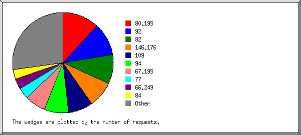
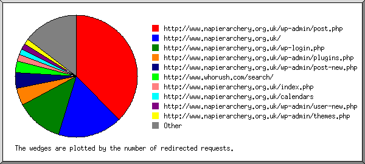
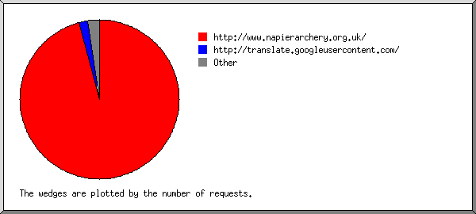
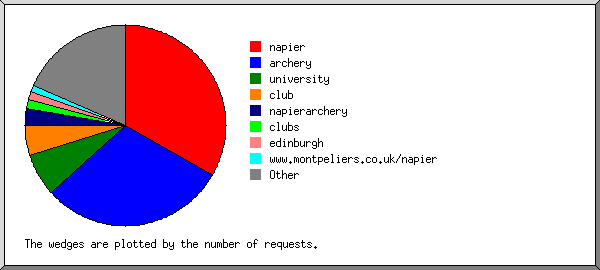
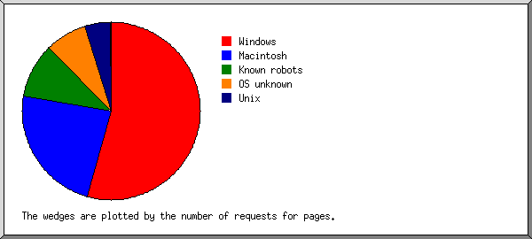
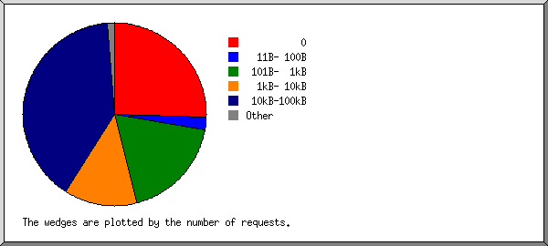
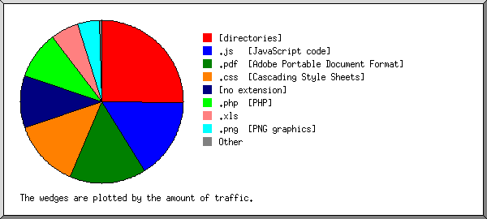
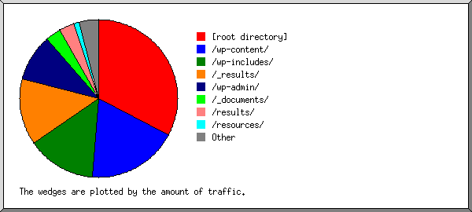
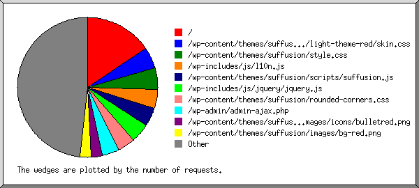

Web Server Statistics for napierarchery.org.uk
Web Server Statistics for napierarchery.org.uk
Program started on Wed, Aug 31 2011 at 1:35 PM.
Analyzed requests from Thu, Aug 25 2011 at 3:29 PM to Wed, Aug 31 2011 at 12:54 PM (5.89 days).
Web Server Statistics for napierarchery.org.ukProgram started on Wed, Aug 31 2011 at 1:35 PM.
Analyzed requests from Thu, Aug 25 2011 at 3:29 PM to Wed, Aug 31 2011 at 12:54 PM (5.89 days).
(Go To: Top | General Summary | Monthly Report | Daily Summary | Hourly Summary | Domain Report | Organization Report | Redirected Referrer Report | Failed Referrer Report | Referring Site Report | Search Word Report | Browser Report | Browser Summary | Operating System Report | Status Code Report | File Size Report | File Type Report | Directory Report | Request Report)
Successful requests: 10,908
Average successful requests per day: 1,851
Successful requests for pages: 2,593
Average successful requests for pages per day: 439
Failed requests: 626
Redirected requests: 325
Distinct files requested: 327
Distinct hosts served: 91
Data transferred: 188.44 megabytes
Average data transferred per day: 31.98 megabytes
(Go To: Top | General Summary | Monthly Report | Daily Summary | Hourly Summary | Domain Report | Organization Report | Redirected Referrer Report | Failed Referrer Report | Referring Site Report | Search Word Report | Browser Report | Browser Summary | Operating System Report | Status Code Report | File Size Report | File Type Report | Directory Report | Request Report)
Each unit ( ) represents 80 requests for pages or part thereof.
) represents 80 requests for pages or part thereof.
| month | #reqs | #pages | |
|---|---|---|---|
| Aug 2011 | 10908 | 2593 |  |
Busiest month: Aug 2011 (2,593 requests for pages).
(Go To: Top | General Summary | Monthly Report | Daily Summary | Hourly Summary | Domain Report | Organization Report | Redirected Referrer Report | Failed Referrer Report | Referring Site Report | Search Word Report | Browser Report | Browser Summary | Operating System Report | Status Code Report | File Size Report | File Type Report | Directory Report | Request Report)
Each unit () represents 30 requests for pages or part thereof.
| day | #reqs | #pages | |
|---|---|---|---|
| Sun | 978 | 349 |   |
| Mon | 1198 | 282 |  |
| Tue | 944 | 253 | |
| Wed | 197 | 71 | |
| Thu | 5526 | 1254 | |
| Fri | 1146 | 210 | |
| Sat | 919 | 174 | |
(Go To: Top | General Summary | Monthly Report | Daily Summary | Hourly Summary | Domain Report | Organization Report | Redirected Referrer Report | Failed Referrer Report | Referring Site Report | Search Word Report | Browser Report | Browser Summary | Operating System Report | Status Code Report | File Size Report | File Type Report | Directory Report | Request Report)
Each unit () represents 15 requests for pages or part thereof.
| hour | #reqs | #pages | |
|---|---|---|---|
| 0 | 8 | 1 | |
| 1 | 22 | 15 | |
| 2 | 10 | 5 | |
| 3 | 228 | 146 | |
| 4 | 458 | 78 | |
| 5 | 26 | 5 | |
| 6 | 34 | 8 | |
| 7 | 98 | 17 | |
| 8 | 18 | 4 | |
| 9 | 256 | 63 | |
| 10 | 391 | 142 | |
| 11 | 520 | 139 | |
| 12 | 531 | 115 | |
| 13 | 244 | 69 | |
| 14 | 60 | 12 | |
| 15 | 1288 | 226 |  |
| 16 | 1370 | 418 | |
| 17 | 3135 | 639 | |
| 18 | 738 | 210 | |
| 19 | 249 | 74 | |
| 20 | 170 | 46 | |
| 21 | 326 | 44 | |
| 22 | 720 | 117 | |
| 23 | 8 | 0 |
(Go To: Top | General Summary | Monthly Report | Daily Summary | Hourly Summary | Domain Report | Organization Report | Redirected Referrer Report | Failed Referrer Report | Referring Site Report | Search Word Report | Browser Report | Browser Summary | Operating System Report | Status Code Report | File Size Report | File Type Report | Directory Report | Request Report)
Listing domains, sorted by the amount of traffic.
| #reqs | %bytes | domain |
|---|---|---|
| 10908 | 100% | [unresolved numerical addresses] |
(Go To: Top | General Summary | Monthly Report | Daily Summary | Hourly Summary | Domain Report | Organization Report | Redirected Referrer Report | Failed Referrer Report | Referring Site Report | Search Word Report | Browser Report | Browser Summary | Operating System Report | Status Code Report | File Size Report | File Type Report | Directory Report | Request Report)

Listing the top 20 organizations by the number of requests, sorted by the number of requests.
| #reqs | %bytes | organization |
|---|---|---|
| 7830 | 67.97% | 89 |
| 313 | 1.32% | 84 |
| 308 | 8.41% | 67.195 |
| 282 | 2.17% | 193.58 |
| 274 | 2.49% | 92 |
| 226 | 1.50% | 82 |
| 225 | 1.09% | 85 |
| 144 | 0.94% | 65.36 |
| 124 | 0.94% | 94 |
| 92 | 0.78% | 74 |
| 92 | 0.83% | 2 |
| 90 | 1.21% | 58 |
| 90 | 0.79% | 80.239 |
| 78 | 0.34% | 129.215 |
| 75 | 0.64% | 209.85 |
| 69 | 0.88% | 66.249 |
| 64 | 0.53% | 80.13 |
| 64 | 0.71% | 114 |
| 53 | 0.47% | 146.176 |
| 50 | 0.33% | 86 |
| 365 | 5.65% | [not listed: 27 organizations] |
(Go To: Top | General Summary | Monthly Report | Daily Summary | Hourly Summary | Domain Report | Organization Report | Redirected Referrer Report | Failed Referrer Report | Referring Site Report | Search Word Report | Browser Report | Browser Summary | Operating System Report | Status Code Report | File Size Report | File Type Report | Directory Report | Request Report)

Listing referring URLs, sorted by the number of redirected requests.
(Go To: Top | General Summary | Monthly Report | Daily Summary | Hourly Summary | Domain Report | Organization Report | Redirected Referrer Report | Failed Referrer Report | Referring Site Report | Search Word Report | Browser Report | Browser Summary | Operating System Report | Status Code Report | File Size Report | File Type Report | Directory Report | Request Report)

Listing referring URLs, sorted by the number of failed requests.
(Go To: Top | General Summary | Monthly Report | Daily Summary | Hourly Summary | Domain Report | Organization Report | Redirected Referrer Report | Failed Referrer Report | Referring Site Report | Search Word Report | Browser Report | Browser Summary | Operating System Report | Status Code Report | File Size Report | File Type Report | Directory Report | Request Report)

Listing referring sites, sorted by the number of requests.
| #reqs | site |
|---|---|
| 9549 | http://www.napierarchery.org.uk/ |
| 123 | http://webhost2.burstfire.net/ |
| 58 | http://www.facebook.com/ |
| 8 | http://www.ubound.info/ |
| 6 | http://82.136.27.2/ |
| 5 | http://www.archerygb.org/ |
| 2 | http://www.google.com/ |
(Go To: Top | General Summary | Monthly Report | Daily Summary | Hourly Summary | Domain Report | Organization Report | Redirected Referrer Report | Failed Referrer Report | Referring Site Report | Search Word Report | Browser Report | Browser Summary | Operating System Report | Status Code Report | File Size Report | File Type Report | Directory Report | Request Report)

Listing query words, sorted by the number of requests.
| #reqs | search term |
|---|---|
| 2 | university |
| 2 | napier |
(Go To: Top | General Summary | Monthly Report | Daily Summary | Hourly Summary | Domain Report | Organization Report | Redirected Referrer Report | Failed Referrer Report | Referring Site Report | Search Word Report | Browser Report | Browser Summary | Operating System Report | Status Code Report | File Size Report | File Type Report | Directory Report | Request Report)

Listing the top 40 browsers by the number of requests for pages, sorted by the number of requests for pages.
| #reqs | #pages | browser |
|---|---|---|
| 6935 | 1523 | Mozilla/5.0 (Macintosh; Intel Mac OS X 10_7_1) AppleWebKit/534.48.3 (KHTML, like Gecko) Version/5.1 Safari/534.48.3 |
| 282 | 180 | Mozilla/4.0 (compatible; MSIE 8.0; Windows NT 5.1; Trident/4.0; GTB5) |
| 308 | 137 | Mozilla/5.0 (compatible; Yahoo! Slurp; http://help.yahoo.com/help/us/ysearch/slurp) |
| 154 | 76 | Mozilla/5.0 (Macintosh; Intel Mac OS X 10_6_8) AppleWebKit/534.50 (KHTML, like Gecko) Version/5.1 Safari/534.50 |
| 220 | 67 | Mozilla/4.0 (compatible; MSIE 6.0; Windows NT 5.1) |
| 312 | 65 | Mozilla/5.0 (Windows NT 6.1; rv:6.0) Gecko/20100101 Firefox/6.0 |
| 618 | 58 | Mozilla/5.0 (iPhone; U; CPU iPhone OS 4_3_5 like Mac OS X; en-us) AppleWebKit/533.17.9 (KHTML, like Gecko) Version/5.0.2 Mobile/8L1 Safari/6533.18.5 |
| 143 | 54 | Mozilla/5.0 (Windows NT 6.1; WOW64) AppleWebKit/535.1 (KHTML, like Gecko) Chrome/13.0.782.215 Safari/535.1 |
| 116 | 32 | Mozilla/5.0 (Macintosh; Intel Mac OS X 10_7_1) AppleWebKit/535.1 (KHTML, like Gecko) Chrome/14.0.835.109 Safari/535.1 |
| 192 | 32 | Mozilla/5.0 (Windows NT 5.1; rv:6.0) Gecko/20100101 Firefox/6.0 |
| 63 | 30 | Mozilla/5.0 (compatible; Googlebot/2.1; +http://www.google.com/bot.html) |
| 50 | 20 | Mozilla/5.0 (Windows NT 6.1; WOW64) AppleWebKit/534.50 (KHTML, like Gecko) Version/5.1 Safari/534.50 |
| 90 | 20 | Opera/9.80 (Windows NT 6.1; U; en) Presto/2.9.168 Version/11.50 |
| 24 | 17 | Mozilla/5.0 (compatible; Dow Jones Searchbot) |
| 78 | 16 | Mozilla/5.0 (Windows NT 6.1; WOW64; rv:6.0) Gecko/20100101 Firefox/6.0 |
| 42 | 13 | Mozilla/4.0 (compatible; MSIE 8.0; Windows NT 5.1; Trident/4.0; .NET CLR 2.0.50727; .NET CLR 3.0.04506.648; .NET CLR 3.5.21022; .NET CLR 3.0.4506.2152; .NET CLR 3.5.30729; InfoPath.2) |
| 12 | 12 | WordPress 2.8.3 (iPhone; iPhone OS 4.3.5; en_GB) |
| 90 | 12 | Mozilla/5.0 (Linux; U; Android 2.3.4; generic) AppleWebKit/534.24 (KHTML, like Gecko; Google Web Preview) Version/4.0 Mobile Safari/534.24 |
| 12 | 12 | Mozilla/5.0 (compatible; MJ12bot/v1.4.0; http://www.majestic12.co.uk/bot.php?+) |
| 132 | 12 | Opera/9.80 (Macintosh; Intel Mac OS X 10.7.1; U; Edition MacAppStore; en) Presto/2.9.168 Version/11.50 |
| 12 | 12 | Apple-PubSub/65.28 |
| 75 | 10 | Mozilla/5.0 (X11; Linux x86_64) AppleWebKit/534.24 (KHTML, like Gecko; Google Web Preview) Chrome/11.0.696 Safari/534.24 |
| 50 | 10 | Mozilla/5.0 (Windows NT 6.0; rv:5.0) Gecko/20100101 Firefox/5.0 |
| 63 | 10 | Mozilla/5.0 (Windows NT 6.0; rv:6.0) Gecko/20100101 Firefox/6.0 |
| 60 | 8 | Mozilla/5.0 (Macintosh; Intel Mac OS X 10_7_1) AppleWebKit/534.48.3 (KHTML, like Gecko) LittleSnapper/ Safari/531.21.10 |
| 64 | 8 | Mozilla/5.0 (Linux; U; Android 2.3.3; en-gb; HTC_DesireS_S510e Build/GRI40) AppleWebKit/533.1 (KHTML, like Gecko) Version/4.0 Mobile Safari/533.1 |
| 76 | 8 | wp-ios/2.8.3 |
| 23 | 8 | Mozilla/4.0 (compatible; MSIE 8.0; Windows NT 6.1; Trident/4.0; SLCC2; .NET CLR 2.0.50727; .NET CLR 3.5.30729; .NET CLR 3.0.30729; Media Center PC 6.0; .NET4.0C; .NET4.0E; InfoPath.3) |
| 8 | 8 | Mozilla/5.0 (compatible; MSIE 9.0; Windows NT 6.1; Trident/5.0) |
| 64 | 8 | Mozilla/5.0 (Windows NT 6.1; WOW64) AppleWebKit/535.1 (KHTML, like Gecko) Chrome/14.0.835.35 Safari/535.1 |
| 6 | 6 | Mozilla/5.0 (compatible; 008/0.83; http://www.80legs.com/webcrawler.html) Gecko/2008032620 |
| 36 | 6 | Mozilla/5.0 (X11; U; Linux i686 (x86_64); en-US; rv:1.9.1.11) Gecko/20100701 SeaMonkey/2.0.6 |
| 24 | 6 | Mozilla/5.0 (X11; U; Linux i686 (x86_64); en-US; rv:1.9.3a5pre) Gecko/20100513 Minefield/3.7a5pre |
| 24 | 6 | Mozilla/5.0 (X11; U; Linux i686 (x86_64); en-US; rv:2.0b1) Gecko/20100630 Firefox/4.0b1 |
| 24 | 6 | Mozilla/5.0 (X11; Linux i686 on x86_64; rv:7.0a2) Gecko/20110709 Firefox/7.0a2 |
| 24 | 6 | Mozilla/5.0 (X11; Linux i686 on x86_64; rv:5.0) Gecko/20100101 Firefox/5.0 |
| 24 | 6 | Mozilla/5.0 (X11; Linux i686 on x86_64; rv:6.0) Gecko/20100101 Firefox/6.0 |
| 15 | 6 | Mozilla/5.0 (X11; U; Linux i686 (x86_64); en-US; rv:1.8.1.12) Gecko/20080219 Firefox/2.0.0.12 Navigator/9.0.0.6 |
| 18 | 6 | Mozilla/5.0 (X11; U; Linux x86_64; en-US) AppleWebKit/533.4 (KHTML, like Gecko) Chrome/5.0.375.99 Safari/533.4 |
| 36 | 6 | Opera/9.80 (X11; Linux x86_64; U; en) Presto/2.6.30 Version/10.60 |
| 307 | 55 | [not listed: 28 browsers] |
(Go To: Top | General Summary | Monthly Report | Daily Summary | Hourly Summary | Domain Report | Organization Report | Redirected Referrer Report | Failed Referrer Report | Referring Site Report | Search Word Report | Browser Report | Browser Summary | Operating System Report | Status Code Report | File Size Report | File Type Report | Directory Report | Request Report)

Listing browsers with at least 1 request for a page, sorted by the number of requests for pages.
| # | #reqs | #pages | browser |
|---|---|---|---|
| 1 | 8458 | 1827 | Safari |
| 7323 | 1645 | Safari/534 | |
| 375 | 102 | Safari/535 | |
| 618 | 58 | Safari/6533 | |
| 82 | 14 | Safari/533 | |
| 60 | 8 | Safari/531 | |
| 2 | 618 | 292 | MSIE |
| 377 | 205 | MSIE/8 | |
| 229 | 75 | MSIE/6 | |
| 8 | 8 | MSIE/9 | |
| 4 | 4 | MSIE/7 | |
| 3 | 434 | 210 | Netscape (compatible) |
| 4 | 837 | 167 | Firefox |
| 670 | 129 | Firefox/6 | |
| 74 | 16 | Firefox/5 | |
| 54 | 10 | Firefox/4 | |
| 15 | 6 | Firefox/2 | |
| 24 | 6 | Firefox/7 | |
| 5 | 258 | 38 | Opera |
| 258 | 38 | Opera/9 | |
| 6 | 105 | 18 | Mozilla |
| 60 | 12 | Mozilla/1 | |
| 7 | 12 | 12 | Apple-PubSub |
| 12 | 12 | Apple-PubSub/65 | |
| 8 | 48 | 12 | WordPress |
| 12 | 12 | WordPress/2 | |
| 9 | 76 | 8 | wp-ios |
| 76 | 8 | wp-ios/2 | |
| 10 | 4 | 4 | Lynx |
| 4 | 4 | Lynx/2 | |
| 11 | 3 | 3 | Browsershots |
| 12 | 2 | 2 | Google-Site-Verification |
| 2 | 2 | Google-Site-Verification/1 | |
| 51 | 0 | [not listed: 3 browsers] |
(Go To: Top | General Summary | Monthly Report | Daily Summary | Hourly Summary | Domain Report | Organization Report | Redirected Referrer Report | Failed Referrer Report | Referring Site Report | Search Word Report | Browser Report | Browser Summary | Operating System Report | Status Code Report | File Size Report | File Type Report | Directory Report | Request Report)

Listing operating systems, sorted by the number of requests for pages.
| # | #reqs | #pages | OS |
|---|---|---|---|
| 1 | 8060 | 1715 | Macintosh |
| 2 | 1743 | 539 | Windows |
| 769 | 308 | Windows XP | |
| 974 | 231 | Unknown Windows | |
| 3 | 321 | 150 | Known robots |
| 4 | 309 | 101 | OS unknown |
| 5 | 473 | 88 | Unix |
| 473 | 88 | Linux |
(Go To: Top | General Summary | Monthly Report | Daily Summary | Hourly Summary | Domain Report | Organization Report | Redirected Referrer Report | Failed Referrer Report | Referring Site Report | Search Word Report | Browser Report | Browser Summary | Operating System Report | Status Code Report | File Size Report | File Type Report | Directory Report | Request Report)

Listing status codes, sorted numerically.
| #reqs | status code |
|---|---|
| 7896 | 200 OK |
| 96 | 301 Document moved permanently |
| 229 | 302 Document found elsewhere |
| 3012 | 304 Not modified since last retrieval |
| 626 | 404 Document not found |
(Go To: Top | General Summary | Monthly Report | Daily Summary | Hourly Summary | Domain Report | Organization Report | Redirected Referrer Report | Failed Referrer Report | Referring Site Report | Search Word Report | Browser Report | Browser Summary | Operating System Report | Status Code Report | File Size Report | File Type Report | Directory Report | Request Report)

| size | #reqs | %bytes |
|---|---|---|
| 0 | 3066 | |
| 1B- 10B | 30 | |
| 11B- 100B | 92 | |
| 101B- 1kB | 1737 | 0.43% |
| 1kB- 10kB | 1283 | 3.02% |
| 10kB-100kB | 4523 | 72.68% |
| 100kB- 1MB | 177 | 23.87% |
(Go To: Top | General Summary | Monthly Report | Daily Summary | Hourly Summary | Domain Report | Organization Report | Redirected Referrer Report | Failed Referrer Report | Referring Site Report | Search Word Report | Browser Report | Browser Summary | Operating System Report | Status Code Report | File Size Report | File Type Report | Directory Report | Request Report)

Listing extensions with at least 0.1% of the traffic, sorted by the amount of traffic.
| #reqs | %bytes | extension |
|---|---|---|
| 1473 | 31.73% | .php [PHP] |
| 2549 | 27.67% | [directories] |
| 1697 | 11.63% | .js [JavaScript code] |
| 1426 | 10.20% | .css [Cascading Style Sheets] |
| 67 | 9.77% | .pdf [Adobe Portable Document Format] |
| 132 | 4.98% | .xls |
| 2985 | 3.04% | .png [PNG graphics] |
| 168 | 0.74% | .jpg [JPEG graphics] |
| 329 | 0.15% | .gif [GIF graphics] |
| 82 | 0.09% | [not listed: 6 extensions] |
(Go To: Top | General Summary | Monthly Report | Daily Summary | Hourly Summary | Domain Report | Organization Report | Redirected Referrer Report | Failed Referrer Report | Referring Site Report | Search Word Report | Browser Report | Browser Summary | Operating System Report | Status Code Report | File Size Report | File Type Report | Directory Report | Request Report)

Listing directories with at least 0.01% of the traffic, sorted by the amount of traffic.
| #reqs | %bytes | directory |
|---|---|---|
| 2012 | 31.76% | /wp-admin/ |
| 2618 | 26.80% | [root directory] |
| 4203 | 14.36% | /wp-content/ |
| 1681 | 11.79% | /wp-includes/ |
| 233 | 10.34% | /results/ |
| 52 | 4.51% | /documents/ |
| 109 | 0.44% | /resources/ |
(Go To: Top | General Summary | Monthly Report | Daily Summary | Hourly Summary | Domain Report | Organization Report | Redirected Referrer Report | Failed Referrer Report | Referring Site Report | Search Word Report | Browser Report | Browser Summary | Operating System Report | Status Code Report | File Size Report | File Type Report | Directory Report | Request Report)

Listing files with at least 20 requests, sorted by the number of requests.
| #reqs | %bytes | last time | file |
|---|---|---|---|
| 2458 | 26.53% | Aug/31/11 12:54 PM | / |
| 1038 | 14.14% | Aug/31/11 12:54 PM | /?ver=3.8.2&suffusion-css=css |
| 104 | 0.91% | Aug/31/11 12:51 PM | /?page_id=94 |
| 87 | 0.81% | Aug/31/11 12:49 PM | /?page_id=34 |
| 83 | 0.71% | Aug/31/11 12:49 PM | /?page_id=11 |
| 75 | 1.14% | Aug/31/11 12:49 PM | /?page_id=19 |
| 59 | 0.69% | Aug/31/11 3:31 AM | /?page_id=54 |
| 56 | 0.48% | Aug/31/11 5:11 AM | /?page_id=4 |
| 50 | 0.49% | Aug/31/11 12:49 PM | /?page_id=42 |
| 40 | 0.40% | Aug/31/11 3:24 AM | /?p=69 |
| 39 | 0.35% | Aug/31/11 12:51 PM | /?page_id=51 |
| 25 | 0.21% | Aug/31/11 3:23 AM | /?page_id=46 |
| 17 | 0.02% | Aug/31/11 3:23 AM | /?feed=rss2 |
| 14 | 0.12% | Aug/31/11 5:39 AM | /?author=1 |
| 413 | 0.03% | Aug/31/11 12:54 PM | /wp-includes/js/l10n.js |
| 403 | 0.03% | Aug/31/11 12:54 PM | /wp-includes/js/l10n.js?ver=20101110 |
| 411 | 8.92% | Aug/31/11 12:54 PM | /wp-includes/js/jquery/jquery.js |
| 405 | 8.65% | Aug/31/11 12:54 PM | /wp-includes/js/jquery/jquery.js?ver=1.6.1 |
| 393 | 1.40% | Aug/31/11 12:54 PM | /wp-content/themes/suffusion/scripts/suffusion.js |
| 388 | 1.36% | Aug/31/11 12:54 PM | /wp-content/themes/suffusion/scripts/suffusion.js?ver=3.8.2 |
| 392 | 7.64% | Aug/31/11 12:54 PM | /wp-content/themes/suffusion/style.css |
| 392 | 7.64% | Aug/31/11 12:54 PM | /wp-content/themes/suffusion/style.css?ver=3.8.2 |
| 369 | 1.05% | Aug/31/11 12:54 PM | /wp-content/themes/suffusion/skins/light-theme-red/skin.css |
| 369 | 1.05% | Aug/31/11 12:54 PM | /wp-content/themes/suffusion/skins/light-theme-red/skin.css?ver=3.8.2 |
| 367 | 0.46% | Aug/31/11 12:54 PM | /wp-content/themes/suffusion/rounded-corners.css |
| 367 | 0.46% | Aug/31/11 12:54 PM | /wp-content/themes/suffusion/rounded-corners.css?ver=3.8.2 |
| 296 | 0.03% | Aug/31/11 12:49 PM | /wp-content/themes/suffusion/images/bg-red.png |
| 295 | 0.06% | Aug/31/11 12:49 PM | /wp-content/themes/suffusion/images/search-button-red.png |
| 294 | 0.03% | Aug/31/11 12:49 PM | /wp-content/themes/suffusion/images/icons/bulletred.png |
| 285 | 0.05% | Aug/31/11 12:49 PM | /wp-content/themes/suffusion/images/icons/folder-gray-16x16.png |
| 278 | 0.25% | Aug/31/11 12:49 PM | /wp-content/themes/suffusion/images/link.png |
| 257 | 0.06% | Aug/31/11 12:49 PM | /wp-content/themes/suffusion/images/comments.png |
| 248 | 3.75% | Aug/29/11 8:26 PM | /wp-admin/load-scripts.php |
| 49 | 0.89% | Aug/28/11 6:03 PM | /wp-admin/load-scripts.php?c=1&load=jquery,utils&ver=fb5c271ac01e8186b23ece33d5ce4961 |
| 43 | 0.82% | Aug/28/11 6:03 PM | /wp-admin/load-scripts.php?c=1&load=hoverIntent,common,jquery-color,wp-ajax-response,wp-lists,jquery-ui-core,jquery-ui-widget,jquery-ui-mouse,jquery-ui-resizable,quicktags,jquery-query,admin-comments,jquery-ui-sortable,postbox,dashboard,thickbox,plugin-install,media-upload&ver=bd8fcbe46a9f3c5a70cacd336ead667d |
| 27 | 0.58% | Aug/28/11 6:03 PM | /wp-admin/load-scripts.php?c=1&load=hoverIntent,common,jquery-color,schedule,wp-ajax-response,autosave,wp-lists,jquery-ui-core,jquery-ui-widget,jquery-ui-mouse,jquery-ui-resizable,jquery-query,admin-comments,suggest,jquery-ui-sortable,postbox,post,thickbox,media-upload&ver=2b90289b41abe121b9400cf60c21cac7 |
| 27 | 0.53% | Aug/28/11 6:03 PM | /wp-admin/load-scripts.php?c=1&load=jquery,utils,quicktags&ver=21fa3d7e711849451cd426d2d178ee0c |
| 21 | 0.09% | Aug/29/11 11:24 AM | /wp-admin/load-scripts.php?c=1&load=hoverIntent,common,jquery-color,thickbox,theme-preview,theme&ver=4b2e4dbdfe0b32a4f62f389cb6805f55 |
| 18 | 0.04% | Aug/29/11 3:46 PM | /wp-admin/load-scripts.php?c=1&load=hoverIntent,common,jquery-color&ver=7d903dfc1d58d3c10544b01c2fc61931 |
| 18 | 0.17% | Aug/25/11 5:43 PM | /wp-admin/load-scripts.php?c=1&load=hoverIntent,common,jquery-color,jquery-ui-sortable,jquery-ui-draggable,jquery-ui-tabs,suggest&ver=e44a4ab430f691a01e1c8c8a6b30ad59 |
| 18 | 0.37% | Aug/25/11 5:43 PM | /wp-admin/load-scripts.php?c=1&load=jquery,utils,jquery-ui-core,jquery-ui-widget,jquery-ui-mouse,jquery-ui-position&ver=480288dbd413722861a6a2d52fb8b774 |
| 241 | 0.12% | Aug/31/11 10:19 AM | /wp-content/themes/suffusion/images/calred.png |
| 204 | 6.00% | Aug/28/11 6:05 PM | /wp-admin/post.php |
| 42 | 1.18% | Aug/28/11 6:05 PM | /wp-admin/post.php?post=94&action=edit |
| 36 | 1.02% | Aug/28/11 6:05 PM | /wp-admin/post.php?post=94&action=edit&message=1 |
| 24 | 0.67% | Aug/25/11 4:29 PM | /wp-admin/post.php?post=4&action=edit |
| 18 | 0.56% | Aug/25/11 5:57 PM | /wp-admin/post.php?post=54&action=edit |
| 18 | 0.51% | Aug/25/11 4:29 PM | /wp-admin/post.php?post=4&action=edit&message=1 |
| 12 | 0.35% | Aug/25/11 5:00 PM | /wp-admin/post.php?post=34&action=edit |
| 12 | 0.41% | Aug/25/11 4:00 PM | /wp-admin/post.php?post=19&action=edit |
| 12 | 0.35% | Aug/25/11 5:00 PM | /wp-admin/post.php?post=34&action=edit&message=1 |
| 12 | 0.41% | Aug/25/11 4:01 PM | /wp-admin/post.php?post=19&action=edit&message=1 |
| 195 | 13.56% | Aug/29/11 11:24 AM | /wp-admin/themes.php |
| 42 | 1.00% | Aug/25/11 5:51 PM | /wp-admin/themes.php?page=suffusion-options-manager |
| 24 | 2.30% | Aug/25/11 5:45 PM | /wp-admin/themes.php?page=suffusion-options-manager&tab=theme-options-templates.php |
| 24 | 3.28% | Aug/25/11 5:35 PM | /wp-admin/themes.php?page=suffusion-options-manager&tab=theme-options-visual-effects.php&settings-updated=true |
| 18 | 0.88% | Aug/25/11 5:57 PM | /wp-admin/themes.php?page=suffusion-options-manager&tab=theme-options-blog-features.php&settings-updated=true |
| 18 | 2.45% | Aug/25/11 5:52 PM | /wp-admin/themes.php?page=suffusion-options-manager&tab=theme-options-visual-effects.php |
| 12 | 0.33% | Aug/25/11 5:45 PM | /wp-admin/themes.php?page=suffusion-options-manager&tab=theme-options-custom-types.php |
| 12 | 0.58% | Aug/25/11 5:54 PM | /wp-admin/themes.php?page=suffusion-options-manager&tab=theme-options-blog-features.php |
| 12 | 1.85% | Aug/25/11 5:51 PM | /wp-admin/themes.php?page=suffusion-options-manager&tab=theme-options-theme-skinning.php |
| 180 | 0.02% | Aug/25/11 6:00 PM | /wp-admin/admin-ajax.php |
| 136 | 0.03% | Aug/31/11 12:51 PM | /wp-includes/js/comment-reply.js |
| 128 | 0.03% | Aug/31/11 12:51 PM | /wp-includes/js/comment-reply.js?ver=20090102 |
| 122 | 0.01% | Aug/29/11 12:27 PM | /wp-includes/images/admin-bar-sprite.png |
| 122 | 0.01% | Aug/29/11 12:27 PM | /wp-includes/images/admin-bar-sprite.png?d=11122010 |
| 122 | 0.02% | Aug/29/11 12:27 PM | /wp-includes/js/admin-bar.js |
| 122 | 0.02% | Aug/29/11 12:27 PM | /wp-includes/js/admin-bar.js?ver=20110131 |
| 122 | 0.07% | Aug/29/11 12:27 PM | /wp-includes/css/admin-bar.css |
| 122 | 0.07% | Aug/29/11 12:27 PM | /wp-includes/css/admin-bar.css?ver=20110622 |
| 122 | 0.01% | Aug/29/11 12:27 PM | /wp-content/themes/suffusion/images/blog_post_edit.png |
| 118 | 1.02% | Aug/29/11 3:45 PM | /wp-admin/load-styles.php |
| 43 | 0.41% | Aug/28/11 6:03 PM | /wp-admin/load-styles.php?c=1&dir=ltr&load=dashboard,plugin-install,global,wp-admin&ver=8e77e2d8a0596495034b9c96abb95f68 |
| 25 | 0.21% | Aug/28/11 6:03 PM | /wp-admin/load-styles.php?c=1&dir=ltr&load=global,wp-admin&ver=6fc53cd39ae6e24cbe8675674f4082af |
| 21 | 0.18% | Aug/29/11 11:24 AM | /wp-admin/load-styles.php?c=1&dir=ltr&load=theme-install,global,wp-admin&ver=433777fb339f8b6c878c24b1ed4878e8 |
| 12 | 0.10% | Aug/25/11 5:38 PM | /wp-admin/load-styles.php?c=1&dir=ltr&load=theme-editor,global,wp-admin&ver=1af15474be1d586967e9de35707267a1 |
| 109 | 0.44% | Aug/31/11 12:49 PM | /resources/NUACfav.png |
| 70 | 1.63% | Aug/29/11 3:47 PM | /wp-admin/options-general.php |
| 24 | 0.54% | Aug/25/11 4:35 PM | /wp-admin/options-general.php?page=google-analytics-for-wordpress |
| 61 | 1.10% | Aug/29/11 8:25 PM | /wp-admin/ |
| 60 | 0.04% | Aug/29/11 11:24 AM | /wp-admin/index-extra.php |
| 15 | 0.01% | Aug/29/11 11:24 AM | /wp-admin/index-extra.php?jax=dashboard_plugins |
| 15 | 0.02% | Aug/29/11 11:24 AM | /wp-admin/index-extra.php?jax=dashboard_secondary |
| 15 | Aug/29/11 11:24 AM | /wp-admin/index-extra.php?jax=dashboard_incoming_links | |
| 15 | 0.01% | Aug/29/11 11:24 AM | /wp-admin/index-extra.php?jax=dashboard_primary |
| 53 | 0.17% | Aug/29/11 12:36 PM | /xmlrpc.php |
| 44 | 0.50% | Aug/28/11 6:03 PM | /wp-admin/css/colors-fresh.css |
| 44 | 0.50% | Aug/28/11 6:03 PM | /wp-admin/css/colors-fresh.css?ver=20110703 |
| 43 | 0.09% | Aug/29/11 8:24 PM | /wp-login.php |
| 18 | 0.04% | Aug/29/11 8:24 PM | /wp-login.php?redirect_to=http://www.napierarchery.org.uk/wp-admin/&reauth=1 |
| 12 | 0.03% | Aug/25/11 6:28 PM | /wp-login.php?loggedout=true |
| 40 | 0.53% | Aug/29/11 3:47 PM | /wp-admin/plugins.php |
| 39 | 1.84% | Aug/28/11 6:03 PM | /wp-includes/js/tinymce/wp-tinymce.php |
| 39 | 1.84% | Aug/28/11 6:03 PM | /wp-includes/js/tinymce/wp-tinymce.php?c=1&ver=342-20110630 |
| 38 | Aug/28/11 6:03 PM | /wp-admin/images/button-grad.png | |
| 38 | 0.18% | Aug/31/11 12:18 PM | /wp-content/themes/suffusion/scripts/ie-fix.js |
| 38 | 0.18% | Aug/31/11 12:18 PM | /wp-content/themes/suffusion/scripts/ie-fix.js?ver=3.8.2 |
| 38 | 0.15% | Aug/28/11 6:03 PM | /wp-admin/images/menu.png |
| 38 | 0.15% | Aug/28/11 6:03 PM | /wp-admin/images/menu.png?ver=20100531 |
| 38 | 0.01% | Aug/28/11 6:03 PM | /wp-admin/images/arrows.png |
| 36 | Aug/31/11 3:22 AM | /wp-cron.php | |
| 36 | Aug/31/11 3:22 AM | /wp-cron.php?doing_wp_cron | |
| 34 | Aug/28/11 6:03 PM | /wp-admin/images/arrows-dark.png | |
| 34 | 0.14% | Aug/28/11 6:03 PM | /wp-admin/images/icons32.png |
| 34 | 0.14% | Aug/28/11 6:03 PM | /wp-admin/images/icons32.png?ver=20100531 |
| 34 | Aug/28/11 6:03 PM | /wp-admin/images/menu-shadow.png | |
| 34 | Aug/28/11 6:03 PM | /wp-admin/images/white-grad.png | |
| 34 | 0.01% | Aug/28/11 6:03 PM | /wp-admin/images/menu-arrow-frame.png |
| 34 | 0.01% | Aug/28/11 6:03 PM | /wp-admin/images/wp-logo.png |
| 34 | 0.01% | Aug/28/11 6:03 PM | /wp-admin/images/wp-logo.png?ver=20110504 |
| 34 | Aug/28/11 6:03 PM | /wp-includes/images/blank.gif | |
| 30 | Aug/28/11 6:03 PM | /wp-admin/images/media-button-music.gif | |
| 30 | Aug/28/11 6:03 PM | /wp-admin/images/media-button-music.gif?ver=20100531 | |
| 30 | 0.06% | Aug/28/11 6:03 PM | /wp-includes/js/thickbox/loadingAnimation.gif |
| 30 | Aug/28/11 6:03 PM | /wp-admin/images/media-button-video.gif | |
| 30 | Aug/28/11 6:03 PM | /wp-admin/images/media-button-video.gif?ver=20100531 | |
| 30 | Aug/28/11 6:03 PM | /wp-admin/images/media-button-image.gif | |
| 30 | Aug/28/11 6:03 PM | /wp-admin/images/media-button-image.gif?ver=20100531 | |
| 30 | 0.04% | Aug/28/11 6:03 PM | /wp-includes/js/thickbox/thickbox.css |
| 30 | 0.04% | Aug/28/11 6:03 PM | /wp-includes/js/thickbox/thickbox.css?ver=20090514 |
| 30 | 0.01% | Aug/25/11 3:59 PM | /results/2010_10_29_practice.php |
| 30 | 0.02% | Aug/28/11 6:03 PM | /wp-admin/images/wpspin_light.gif |
| 30 | Aug/28/11 6:03 PM | /wp-admin/images/media-button-other.gif | |
| 30 | Aug/28/11 6:03 PM | /wp-admin/images/media-button-other.gif?ver=20100531 | |
| 27 | 0.26% | Aug/28/11 6:03 PM | /wp-includes/js/jquery/ui.draggable.js |
| 27 | 0.26% | Aug/28/11 6:03 PM | /wp-includes/js/jquery/ui.draggable.js?ver=1.8.12 |
| 27 | Aug/28/11 6:03 PM | /wp-admin/images/button-grad-active.png | |
| 24 | 0.02% | Aug/28/11 6:03 PM | /wp-admin/css/login.css |
| 24 | 0.02% | Aug/28/11 6:03 PM | /wp-admin/css/login.css?ver=20110610 |
| 24 | 0.12% | Aug/28/11 6:03 PM | /wp-content/plugins/google-analytics-for-wordpress/images/yoast-logo-rss.png |
| 24 | 1.10% | Aug/25/11 5:48 PM | /wp-admin/theme-editor.php |
| 24 | 0.20% | Aug/29/11 3:47 PM | /wp-admin/tools.php |
| 24 | 0.09% | Aug/28/11 6:03 PM | /wp-admin/images/logo-login.png |
| 24 | 0.01% | Aug/28/11 6:03 PM | /wp-content/plugins/google-analytics-for-wordpress/images/email_sub.png |
| 24 | 0.03% | Aug/28/11 6:03 PM | /wp-includes/images/rss.png |
| 21 | 0.19% | Aug/29/11 11:24 AM | /wp-content/themes/suffusion/screenshot.png |
| 21 | 0.37% | Aug/29/11 11:24 AM | /wp-content/themes/twentyten/screenshot.png |
| 21 | Aug/30/11 5:23 PM | /google237aa8c1e6a28b17.html | |
| 21 | 0.67% | Aug/29/11 11:24 AM | /wp-content/themes/twentyeleven/screenshot.png |
| 1099 | 18.86% | Aug/31/11 12:52 PM | [not listed: 165 files] |